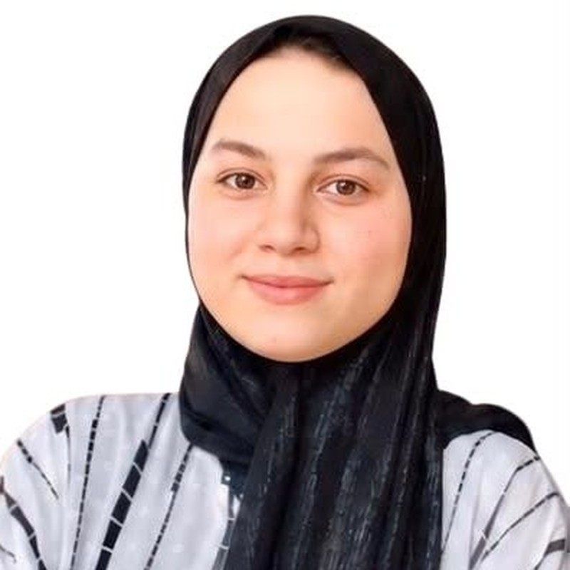

بازگشت به تیم

پروفایل عضو تیم
داکتر مریم میرزاده
معرفی
داکتر مریم میرزاده انکشافدهندهٔ فرانتاند، آموزگار تکنالوژی و محصل رشتههای کمپیوتر ساینس و علوم طبی از افغانستان است. او علاقهٔ ویژهای به توسعهٔ وب، آموزش تکنالوژی، تحقیق و توانمندسازی زنان از طریق نوآوری دیجیتال دارد. زمینههای تحقیقاتی و حرفهای او شامل فرانتاند دولوپمنت، سواد دیجیتال، کارآفرینی، صحت عامه و کاربرد تکنالوژی در تعلیم و توسعهٔ اجتماعی میشود. مریم فارغالتحصیل برنامهٔ Aspire Institute است و در رهبری ابتکارات آموزشی، تکنالوژیکی و اجتماعی تجربه دارد. او متعهد به توسعهٔ راهحلهای نوین دیجیتال و پیشبرد تعلیم، تحقیق و تأثیر پایدار اجتماعی است.
افغانستان یکی از کشورهایی است که هنوز بسیاری از کارها بدون تحقیق انجام میشود. تحقیق باید در هر رشتهٔ علمی، اساس همهٔ کارها باشد.